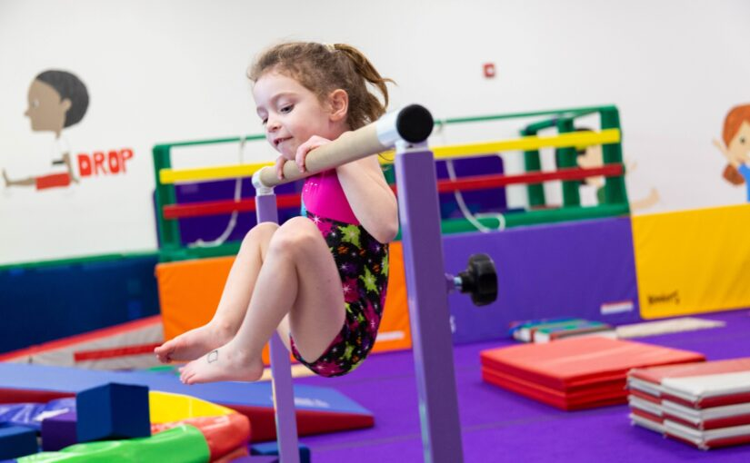
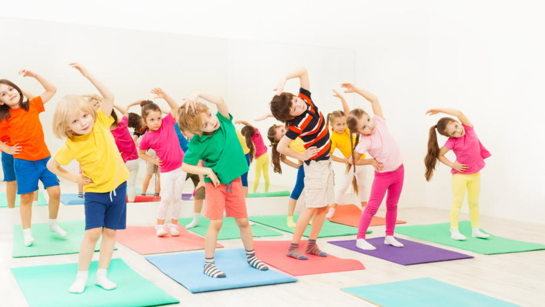

|  Gymnastics and Children Not only is Gymnastics fun, it helps to develop social skills, allowing children to express themselves appropriately in different environment and different people |
 Gym and Children Gym is a great way to allow children to exercise based on their needs and growth. Children Gym is a great way to allow children to play in a comfortable environment! |
Cheerleading and Children With so many options for children to do - dance, sing, gymnast, music, drama - cheerleading has a mic of all components! The core of cheerleading is about building kids up and teaching them to work with others which in turn makes them better people. Try a Cheerleading course! |
To have more varied options, click here.
Address
123 Thomson Road #4-56
Singapore 78901
Directions